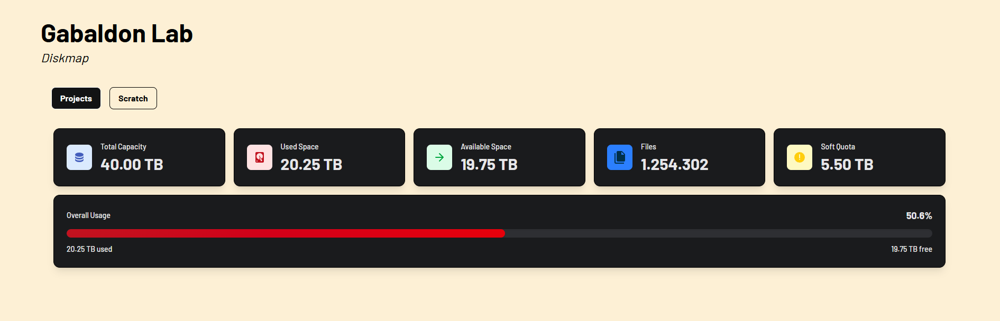

PhylomeDB 6
Participación directa en la migración completa de la plataforma de la versión 5 a la 6, modernizando la infraestructura tanto en la parte del frontend como del backend para mejorar su rendimiento y usabilidad.
Soy un Desarrollador Web con formación en Bioinformática. Me considero una persona curiosa, proactiva y con gran capacidad de adaptación, siempre buscando aprender y enfrentar nuevos retos. Destaco por mi compromiso, el trabajo en equipo y mi habilidad para resolver problemas de forma eficiente. Tras mi etapa de prácticas, busco un entorno donde pueda aportar mi esfuerzo y conocimientos en soluciones web, mientras sigo creciendo profesionalmente.
Participación directa en la migración completa de la plataforma de la versión 5 a la 6, modernizando la infraestructura tanto en la parte del frontend como del backend para mejorar su rendimiento y usabilidad.

Aplicación web privada desarrollada internamente para el BSC. Su objetivo principal es la monitorización detallada del uso de disco y gestión de almacenamiento de la cuota del mare nostrum del grupo, mediante dashboards interactivos y consumo de APIs.
Barcelona Supercomputing Center (BSC)
Escola el Polvorí
Institut Provençana | 2023
Institut Provençana | 2020